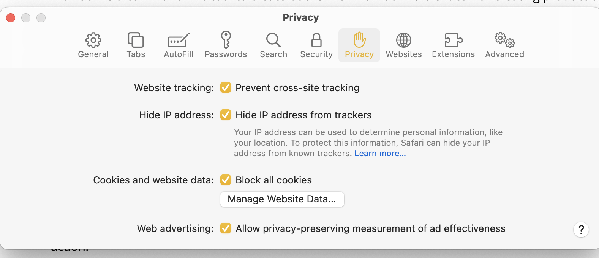
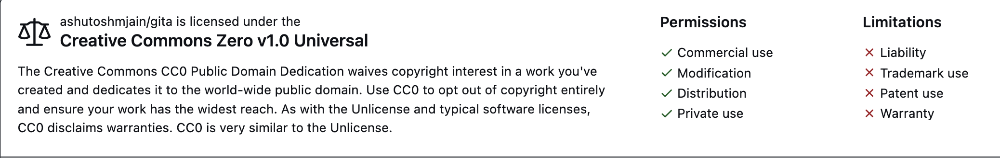

Icons and navigation ..
As far as the features go, you can:
- toggle the chapter menu by clicking on the cheeseburger menu on top left:
- search the book using the magnifying glass:
- turn pages by clicking the left and right angles:
- You can also navigate by using your keyboard's left and right arrows.
- On the top right of the page, you can visit its Github repository, where the source code lives.
mdBook
This book was generated using a Rust program called mdBook. Well, it'll ‘technically’ be wrong to call it a "Book" because mdBook turns the written text 1into a website! That's a pretty big deal because with this little tool a public domain book may reach any device that could open a browser — a laptop, desktop, tablet or even a smartphone — no matter if it is an Apple device or one from Google or even what type of Browser 2, you may choose to use. Thus, it would be appropriate to call it a “web app” , that has several goodies baked in. For example
-
It handles the layout and responsive design so my focus can lie on the content of this book instead of the architecture of the site.
-
At the same time, this application, keeps the essential book experience intact. Particularly on a tablet 3or even on a smartphone browser. It even supports the foot 4notes :-) which I use to stick in my research and notes - kinda the ideas that led to shaping up the chapter.
-
One of the best (and probably least appreciated) feature of this app is "search" . The search, in here provides a three level view

For example - if I search for
Siva, as shown in the graphic above, it gives me the name of the book (Mathurain this case , than the name of the chapter (Prologue), and finally it shows me the name of the heading with in the sections. Since I use a heading for even "research and notes" , you can easily tell if your search term is in the main chapter or if it is buried deep into the foot notes ! When you click on the search result , not only does it take to the appropriate section, it highlights the 'search term' in blue color for easy attention.There are few limitations though - Search index is being served to you over the internet (there is no central server), thus search index can't be too big. Which means if the book is too big , search gets painfully sluggish. That is the reason , I am publishing the third section of this online resource
Maha-Bharataas a separate mdBook.The other limitation is, as of now search supports only English. Probably I haven't dug deeper into the features of this app! To circumvent this limitation, I am abstaining from using any other language — even the
Sanskritverses are purposefully not typed inDevnagri.Despite these limitations, I think search is by far the most useful feature, particularly for a narrative that tries to build a complex message interwoven across many chapters. I highly encourage the reader to use search if they are looking for any specific thing. It can even take you to the text you were last reading if you remember a line or few words — that is the best that technology could do without having the user to "register" for reading and keeping a track of your reading habits.
-
Last , but not the least ; the privacy : the application doesn't use any "cookies or trackers" whatsoever. Which means no one is really watching what you are reading. A word of caution - your browser may still be tracking you ! If you care, I highly recommend using
Safarion a Mac and block all the cookies. Press <<command + Comma>> in Safari and block the cookies , as shown below onPrivacytab
.. btw , if you did that , you won't be able to load most of the websites (eg facebook or Instagram) because ..well you know why ! :-)
About this book [grr - online resource]
As you will see when you toggle the chapters, this web app has two main sections :
-
The first section —
Mathurais a historical narrative that discovers the "writing revolution" when humans adopted “written word” as primary medium for preserving knowledge. I believe this revolution took place around seven thousand years ago whenKrishna DvaipayanascribedMaha-Bharata. Study of this first major shift in human cognition — from spoken to written word — makes a fascinating quest narrative. And at the same time, it might resolve the dilemmas we face as we are moving from analog to increasingly digital realm. -
I also believe that the knowledge that
Dvaipayana(also known asVed Vyasa) wanted to communicate was summarized inBhagvad Gita. He carefully, by design, kept it center-folded in a highly immersive narrative. So immersive that even after seven thousand years, theMaha-bharatais still as interesting a read as the day it was written. Thus the second section of this online resource provides original translation ofBhagvad Gita, followed by my essays discovering core concepts of Gita — this vantage of a technical writer. This ‘point of view’ may be useful to "tech-savvy" readers who desire to seeGitain prevailing rationale of popular science. -
The third section
Maha-Bharatais the original translation of the entire epic, done byKisari Mohan Ganguly, at the beginning of last century. I highly recommend reading his preface to review the guiding motivations of translation work — an immense task without the luxury of modern computing tools.As said above,
Mahabharatais too big to provide effective "mdBook search" feature.. My goal is to reformat this work in web-app format for obvious comfort of consumption on smart devices and search - it is a work in progress.Maha-bharataand this translation is in public domain, thankfully received from sacred-texts. The benefit of reading it at mahabharata.shutri.com is obvious comfort of this presentation format (except for the sluggish search :-)
The collective name of this entire work, is arjunUvaach! You may call it the name of this web-app, rendered to you at https:/gita.shutri.com .
Licence stuff
All the content in this website is under creatives common v1.0. Which means everything is under public domain. The net of this license is as below

For more details please refer to details of license at github repository for this work.
Since Mahabharata's and it's translation by Kisari Mohan Ganguli is also in public domain , thus using any of this work should technically follow the same rules.
Style
- I normally use maroon color for
HindiorSanskrit. This style rule may not apply in the verses because there are just too many, and they are quite obvious. - Hyperlinks are in "blue" color. The hyperlinks are used only where I want the reader to investigate some content. Otherwise adding hyperlinks is pretty useless because you can literally select any word, right click and google search.
- English being my second language, my vocabulary is limited. Even with-in my limited repertoire, I prefer using words that I regularly use. Clarity of idea is a priority over flowery words.
Mathurais a historical "narrative". The focus is on "narrative" rather than historical accuracy.- I refrain from using citations as much as possible. The reason is simple — it is NOT a narrative chasing accuracy. The goal is to imagine possible scenarios, and then review them with an eye to seek comparative probability. This also means it is a subjective discretion.
- Instead of building one concept, or one character, in a single chapter ; I rather try to visit the ideas in subsequent chapters. Thus order is important — each chapter builds on previous. Simple words, say for example "knowledge" , might take a different definition as you progress along. In absence of sequential reading, the article would still make sense, but it might lose the punch.
- It is not a didactic religious document ! The goal is not to impart
Gita. And for a good reason — no one might ever tell it better thanDvaipayana. The purpose of this narrative is to seek that information that writer withheld at that time to avoid "stating the obvious". Having lost the context after thousands of years, we now crave for that information. - Footnotes are used to avoid verbosity in the body of article, but they do carry useful information. For paucity of time, if you happen to "skip-over", or for keeping the flow of reading, I suggest to run by them after finishing the chapter. I try to keep chapter size small so that reader has time to indulge in foot notes :-)
- The theme is based on maholvi. A yellow background with black care-free
Kalamfonts form "Indian Fonts Foundry". Since this is the only theme I test-review from experience standpoint (before publishing), I have restricted other mdBook standard themes5, such asayu,navyetc.
Contact
You can reach me at whatsApp for any questions or suggestions. Since I don't use any cookies or trackers on these pages, only way for me to know you are reading this text, is if you drop a me text ..hopefully of appreciation :-)
research and notes:
mdBook takes the text written in markdown format to publish it through the web app. markDown is an open source implementation that allows conversion of text into html format through a set of simple notations.
Because of limited resources, I only use ‘Google Chrome’ for testing. Expectation is it should work on all browsers but all the features may not be available on older ones such as w3m or elinks that don't support javascipt natively.
This book was “designed” for ‘in-browser’ reading experience on an Apple or Android tablet. It should work pretty well on kindle browser as well, if you want to read it in the bright sun light, though you will need an internet connection. Of course it will work fine on a laptop browser - duh:-)
When you click on the foot note marker in the main text, it brings you down to the relevant note at the bottom. You can always press the browser back arrow on computer (or on tablet) to get back to where you were reading - back to the foot note mark in the main text. Isn't that lot better than reading a paper book!
Modern web-apps, offer a multitude of 'Themes' - the fonts, color combinations, and the font sizes. It is almost impossible to review the text though all the possible combinations. Thus a lone writer-editor must choose one to preview the write ups (:- . It was much easier in older times when all books had the same white-ish color and all words were mostly a shade of black :-)